Open Sources: Voices from the Open Source Revolution
1st Edition January 1999
1-56592-582-3, Order Number: 5823
280 pages, $24.95
|
|
Open Sources: Voices from the Open Source Revolution1st Edition January 1999 1-56592-582-3, Order Number: 5823 280 pages, $24.95 |
We have a fondness for sayings in the Perl community. One of them is "There's more than one way to do it." This is true in Perl. It's also true of Perl. And it's true of the Open Source community, as the essays in this volume illustrate. I won't tell you everything about how Open Source works; that would be like trying to explain why English works. But I can say something about the state of Perl, and where it's going.
Here's another saying: Three great virtues of programming are laziness, impatience, and hubris. Great Perl programmers embrace those virtues. So do Open Source developers. But here I'm going to talk about some other virtues: diligence, patience, and humility. If you think these sound like the opposite, you're right. If you think a single community can't embrace opposing values, then you should spend more time with Perl. After all, there's more than one way to do it.
Written languages probably began with impatience. Or laziness. Without written language, you had to meet another person face to face to communicate with them, or you had to persuade another person to convey your message for you. And there was no way to know what had previously been said except to remember it. But written language gave people symbols, symbols that could stand for things--if the community could agree on what the symbols stood for. So language requires consensus. It's something a group can agree on. It is, in short, a symbol that ties a community together. Most symbols work that way.
So let's look at some symbols:
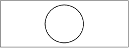
Study it carefully. It's called a circle. It's a very nice circle, as circles go. Very pretty. Very symmetrical. Very simple.
Now if you're a reductionist, you'll say it's only a circle, and nothing more. Well, actually, if you're really a reductionist, you'll say it's a just bunch of photons, but we won't go there, because it wouldn't shed any light on the subject.
If you're not a reductionist, then the circle you see here does not exist in isolation. It exists in relationship to many other things, and in fact takes its meaning from them. In order to understand this simple circle, you have to understand its context, which means you have to understand something about reality.
So here's a picture of reality:
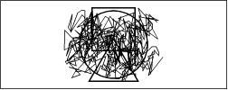
As we all know, reality is a mess.
This is a picture of many things. It's a picture of air molecules bouncing around. It's a picture of the economy. It's a picture of all the relationships of the people in this room. It's a picture of what the typical human language looks like. It's a picture of your company's information systems. It's a picture of the World Wide Web. It's a picture of chaos, and of complexity.
It's certainly a picture of how Perl is organized, since Perl is modeled on human languages. And the reason human languages are complex is because they have to deal with reality.
We all have to deal with reality one way or another. So we simplify. Often we oversimplify.
Our ancestors oversimplified. They fooled themselves into thinking that God only created circles and spheres. They thought God would always prefer simplicity over complexity. When they discovered that reality was more complicated than they thought, they just swept the complexity under a carpet of epicycles. That is, they created unnecessary complexity. This is an important point. The universe is complex, but it's usefully complex.
Evidence abounds that people continue to oversimplify today. Some people prefer to oversimplify their cosmology. Others prefer to oversimplify their theology. Many computer language designers oversimplify their languages, and end up sweeping the universe's complexity under the carpet of the programmer.
It's a natural human trait to look for patterns in the noise, but when we look for those patterns, sometimes we see patterns that aren't really there. But that doesn't mean there aren't real patterns. If we can find a magic wand to suppress the noise, then the signal pops right out. Abracadabra . . . Here is the shape of the big bang, and of stars, and of soap bubbles:
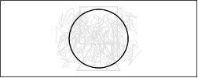
Here is the shape of dimensionality, of salt crystals, and the spaces between tree trunks:
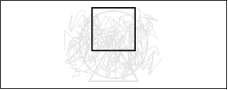
Here is the shape of an anthill, or a Christmas tree. Or the shape of a trinity:
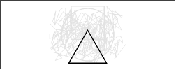
And, of course, once you know the patterns are there, you can pick out the simple figures without the extra chromatic help:
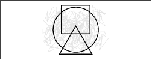
Our brains are built to do that.
Now, you may be wondering what all this has to do with Perl. The fact is, your brain is built to do Perl programming. You have a deep desire to turn the complex into the simple, and Perl is just another tool to help you do that--just as I am using English right now to try to simplify reality. I can use English for that because English is a mess.
This is important, and a little hard to understand. English is useful because it's a mess. Since English is a mess, it maps well onto the problem space, which is also a mess, which we call reality. Similarly, Perl was designed to be a mess (though in the nicest of possible ways).
This is counterintuitive, so let me explain. If you've been educated as any kind of an engineer, it has been pounded into your skull that great engineering is simple engineering. We are taught to admire suspension bridges more than railroad trestles. We are taught to value simplicity and beauty. That's nice. I like circles too.
However, complexity is not always the enemy. What's important is not simplicity or complexity, but how you bridge the two.
You need a certain amount of complexity to do any particular job. A Saturn V rocket is said to have had seven million parts, all of which had to work. But that's not entirely true. Many of those parts were redundant. But that redundancy was absolutely necessary to achieve the goal of putting someone on the moon in 1969. So if some of those rocket parts had the job of being redundant, then each of those parts still had to do their part. So to speak. They also serve who only stand and wait.
We betray ourselves when we say "That's redundant," meaning "That's useless." Redundancy is not always "redundant," whether you're talking about rockets or human languages or computer languages. In short, simplicity is often the enemy of success.
Suppose I want to take over the world. Simplicity says I should just take over the world by myself. But the reality of the situation is that I need your help to take over the world, and you're all very complex. I actually consider that a feature. Your relationships are even more complex. I usually think of those as features. But sometimes they're bugs. We can debug relationships, but it's always good policy to consider the people themselves to be features. People get annoyed when you try to debug them.
We mentioned that some complexity is useless, and some is useful. Here's another example of useful complexity:
Now, most of you sitting here are probably prejudiced in favor of western writing systems, and so you think an ideographic writing system is needlessly complex. You may even be thinking that this picture is as complicated as the previous one. But again, it's a kind of engineering tradeoff. In this case, the Chinese have traded learnability for portability. Does that sound familiar?
Chinese is not, in fact, a single language. It's about five major languages, any of which are mutually unintelligible. And yet, you can write Chinese in one language and read it in another. That's what I call a portable language. By choosing a higher level of abstraction, the Chinese writing system optimizes for communication rather than for simplicity. There are a billion people in China who can't all talk to each other, but at least they can pass notes to each other.
Computers also like to pass notes to each other. Only we call it networking.
A lot of my thinking this year has been influenced by working with Unicode and with XML. Ten years ago, Perl was good at text processing. It's even better at it now, for the old definition of text. But the definition of "text" has been changing out from under Perl over those ten years.
You can blame it all on the Internet.
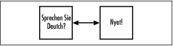
It seems that when you click buttons on your browser, it makes computers want to pass notes to each other. And they want to pass these notes over cultural boundaries. Just as you want to understand what pops up on your screen, your computer wants to understand what it's about to pop up on your screen, because, believe it or not, the computer would actually like to do it right. Computers may be stupid, but they're always obedient. Well, almost always.
That's where Unicode and XML come in. Unicode is just a set of universal ideographs so that the world's computers can pass notes around to each other, and have some chance of doing the right thing with them. Some of the ideographs in Unicode happen to match up with various national character sets such as ASCII, but nobody in the world will ever learn all of those languages. Nobody is expecting you to learn all those languages. That's not the point.
Here's the point. Last month I was working on my church's web page. Our church has just started a Chinese congregation, so it now has two names, one of which can be represented in ASCII, and one of which cannot. Here's what the page looks like:
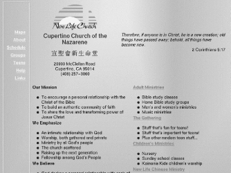
If your browser is fairly recent, and if you have a Unicode font loaded, then this is what you see. There's something important I want you to notice here.
If I'd done this a year ago, this block of Chinese characters would probably have been a GIF image. But there's a problem with images. You can't cut and paste characters from a GIF image. I've tried it often enough to know, and I'm sure you have too. If I'd done this a year ago, I'd also have had to add another layer of complexity to the page. I'd need something like a CGI script to detect whether the browser supports Unicode, because if it doesn't, these characters splatter garbage all over the page. Garbage is usually construed as useless complexity.
Anyway, back to simplicity:
We use circles to represent many things. Our circle of friends. A hug, when written on the back of an envelope. The circle of a wedding ring, which stands for unending love.
Proceeding from the sublime to the ridiculous, we also have the round file, which is a kind of hell for dead paperwork.
Spheres of light. Black holes. Or at least their event horizons.
One ring to rule them all, and in the darkness bind them.
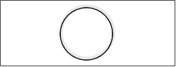
Crystal balls. Pearls.
Onions. Pearl onions.
Circles figure heavily in our symbology. And in particular, by adding various appurtenances to circles, we sometimes represent some rather complicated notions with simple symbols. These symbols are the bridges between simplicity and complexity.
Here's a real Zen diagram:
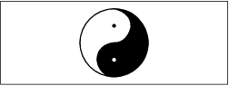
Well, actually, it's not. In fact, the yinyang comes from the Tao, or Dao if you can't pronounce an unaspirated "t". The Tao is an ancient oriental philosophy, and predates Zen by more than a millennium.
Anyway, back to yins and yangs.
The yinyang represents a dualistic philosophy, much like The Force in Star Wars. You know, how is The Force like duct tape? Answer: it has a light side, a dark side, and it holds the universe together. I'm not a dualist myself, because I believe the light is stronger than the darkness. Nevertheless, the concept of balanced forces is useful at times, especially to engineers. When an engineer wants to balance forces, and wants them to stay balanced, he reaches for the duct tape.
When I made this yinyang, I wondered whether I was doing it right. It'd be a shame to get it backwards, or sideways, or something.
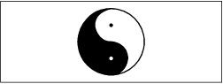
Well, you know, sometimes that sort of thing matters. It matters a lot to organic chemists, who call it chirality--if you take a molecule of spearmint flavor and flip it left for right, you end up with a molecule of caraway flavor. Yuck. I used to think I hated rye bread, till I discovered it was the caraway seeds they put in that I didn't like.
Now, which of those flavors you prefer is just a matter of taste, but doctors and organic chemists will tell you that there are times when chirality is a matter of life and death. Or of deformed limbs, in the case of Thalidomide. It was the "wrong" kind of Thalidomide that actually caused the problems. Dyslexics will tell you that chirality matters a lot in visual symbols. This talk is brought to you by the letters "b" and "d". And "p" and "q". And the number 6. Not to mention the number 9. You can see a 6 and a 9 in the yinyang, in this orientation.
In short, I wondered whether the yinyang is like a swastika, where which way you make it determines who gets mad at you.
So I did some research, on the Web, of course. The fact is, the Web is the perfect example of TMTOWTDI--there's more than one way to do it. In this case, there's every way to do it. You can find the yinyang in every possible orientation. I still don't know whether any of them is more right than the others.
A TYEDYE WORLD is some folks on the Web who sell tie-dyed tee shirts. I guess they'd be Tao-dyed in this case. They think it looks like this:
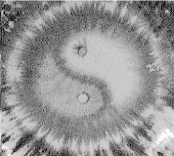
I suppose if you want it the other way you just put the shirt on inside-out. Putting it on upside-down is going to get you stared at.
The folks at the Unicode consortium think it looks like this. I don't know if they're right, but if they're not, it doesn't matter. They published it this way, and now it's right by definition.
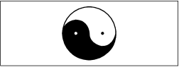
Of course, my dictionary has it upside from that:
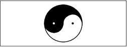
Well, back to Unicode. Unicode is full of circles. Many national scripts within Unicode make use of the circle, and in most of those, it represents the digit 0. Here is Unicode number 3007 (hex). It's the ideographic symbol for 0:
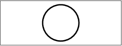
Surprise, surprise. It looks like our 0. Chalk one up for cultural imperialism. In English, of course, we tend to squish our 0 sideways to distinguish it from the letter O.

In Bengali, they squish it the other way, but for similar reasons:
I find it interesting that the world has so many different representations for nothing. One could make endless jokes on it: Much ado about nothing, or Nothing can stop an idea whose time has come. Here's something related to nothing:
This is the universal "prohibited" symbol. In Unicode, it's classified as a combining character.
Of course, in Perl culture, almost nothing is prohibited. My feeling is that the rest of the world already has plenty of perfectly good prohibitions, so why invent more? That applies not just to programming, but also to interpersonal relationships, by the way. I have upon more than one occasion been requested to eject someone from the Perl community, generally for being offensive in some fashion or other. So far I have consistently refused. I believe this is the right policy. At least, it's worked so far, on a practical level. Either the offensive person has left eventually of their own accord, or they've settled down and learned to deal with others more constructively. It's odd. People understand instinctively that the best way for computer programs to communicate with each other is for each of the them to be strict in what they emit, and liberal in what they accept. The odd thing is that people themselves are not willing to be strict in how they speak and liberal in how they listen. You'd think that would also be obvious. Instead, we're taught to express ourselves.
On the other hand, we try to encourage certain virtues in the Perl community. As the apostle Paul points out, nobody makes laws against love, joy, peace, patience, kindness, goodness, gentleness, meekness, or self-control. So rather than concentrating on forbidding evil, let's concentrate on promoting good. Here's the Unicode for that:
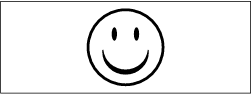
Of course, if you're a flower child, you might prefer this one:
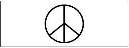
Some of the positive Unicodes aren't so obvious.
Here's the symbol for a bilabial click, one of the symbols in the International Phonetic Alphabet. You may not know it, but many of you make this noise regularly. If you want to try doing one, here's how. You just kind of put your lips together, then make an affricated sort of noise with ingressive mouth air.
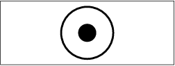
Of course, in English we write that with an X, to go with those O's on the back of the envelope. But you're witnessing the passing of an era. What with email taking over, sending hugs and kisses on the backs of envelopes is becoming a lost art. It just doesn't have quite the same effect as a header line in email. Content-type: text/hugs&kisses.
You know, it's also rather difficult to perfume an email message. Content-type: text/scented. The mind boggles.
Here are more simple circles that represent complicated things. Here's the symbol for earth:
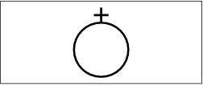
Here's the symbol for Mars:
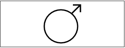
And here's the symbol for Venus:
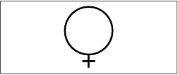
Now, I used to work at Jet Propulsion Laboratory, and I helped just a little to discover that Mars and Venus are pretty complicated. But as if things weren't complicated enough, the ancients complicated things further by overloading those symbols to represent male and female. Men are from Mars, women are from Venus, we are told, but that is not a new idea.
Here's some more history.
If you cut an onion, it looks like this. If we take this to be a picture of the world of Perl, then I must be that little bit of onion inside.
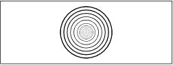
Around me are some of the early adopters of Perl, who are now revered as heroes of the revolution. As more people have joined the movement, new layers have been added. You can also picture this as an atom, with layers of electron shells. Of course, no atom we know of has quite that many electron shells. So stick with the onion.
Now the thing about the onion is that it teaches me something about my own importance, or lack thereof. Namely, that while I may have started all this, I'm still a little bit of the onion. Most of the mass is in the outer layers. (That's why I like to see grassroots movements like the Perl Mongers springing up.) But here I sit in the middle. I get a bit of honor for my historical significance, but in actual fact, most people see the outside of the onion, not the inside. Unless they make onion rings. But even then, the bigger rings have more to them than the smaller rings. Let that be a lesson to those of you who wish to be "inner ringers." That's not where the real power is. Not in this movement, anyway. I've tried to model the Perl movement on another movement I'm a member of, and the founder of that movement said, "He who wishes to be greatest among you must become the servant of all." Of his twelve inner ringers, one betrayed him, and ten of the other eleven went on to suffer a martyr's death. Not that I'm asking any of my friends to throw themselves to the lions just yet.
But back to growth patterns. Natural pearls grow in layers too, around a grain of sand that irritates the oyster in question, which forms layers of pretty stuff. This could be the cross-section of a pearl. People cut up onions frequently, but they almost never cut up pearls. So it's even truer of pearls than of onions. The outer layer is the most important. It's what people see. Or if the pearl is still growing, it's the layer that will support the layer after it. I realize that that classifies me as a mere irritant. I am content to be so classified.
Other things grow over time too. Perhaps if we change the picture to a set of tree rings, it'll be clearer:
If you're familiar with a bit of physics, you know that a pipe is almost as strong as a solid bar of the same diameter, because most of the force is transmitted in the outer layers. The fact is, the center of the tree can rot, but the tree remains perfectly healthy. In a similar fashion, most of the health of Perl culture is in what is happening in the periphery, not in the center. People are saving themselves billions of dollars every year by programming in Perl, but most of those savings are happening out in the trenches. Even closer into the center, a lot more work is going into hooking Perl up to other things than into changing Perl itself. And I think this is as it should be. Core Perl is stabilizing somewhat. Even with core changes such as multithreading and Unicode support, we pretend that we're adding extension modules, because that's cleaner, and people don't have to invoke the new functionality if they don't want to.
All this stuff about growth rings is fine for talking about the past, but what about the future? I don't have a crystal ball. I do own two pairs of binoculars. Here's the typical symbol for that:
This is, of course, the usual cinematic device for indicating that someone is looking through binoculars. I don't know offhand what I should put for the field of view here, so let's see what's at the other end of the binoculars:

Of course, this can also be a picture of two tidally locked bodies rotating around each other:
Each of these planets is raising tides on the other one. People usually understand why there is a tidal bulge on the side facing the other planet. What they don't understand so easily is why there's a bulge on the other side of the planet. But it makes sense when you consider that the other planet is not only pulling the near bulge away from the center of the planet, but it's also pulling the center of the planet away from the far bulge.
This is a really good picture of the relationship of the free software community with the commercial software community. We might even label some of the extremes. Let's just make up some names. We could call the left extreme, um, "Richard." And we could call the right extreme something like, oh, "Bill."
The middle bulges are a little harder to name, but just for today we can call this one on the middle left "Larry," and that one on the middle right "Tim."
This is, of course, another oversimplification, because various people and organizations aren't at a single spot in the diagram, but tend to rattle around. Some people manage to oscillate back and forth from one bulge to the other. One moment they're in favor of more cooperation between the freeware and commercial communities, and the next moment they're vilifying anything commercial. At least our hypothetical Richard and Bill are consistent.
But the action is in the middle.
That's where everybody's been looking, to see what's going to happen. In fact, this is really last year's picture. This year it looks more like this:
Robert L. Forward has written a book, actually a series of books, about a place called Rocheworld. It's named after a fellow named Roche, surprise, surprise. He's the fellow who defined Roche's limit, which predicted that planets would break up if they got too close to each other. It turns out he oversimplified because his math wasn't powerful enough. If you allow your planets to deform into shapes like these, you can get them very much closer together, and keep them stable. Mind you, the net gravitational pull on these points is very low, but it's enough to keep the planets together.
In similar fashion, the freeware and commercial communities are much closer together this year than many people thought possible by the old calculations. In Rocheworld, the planets did not touch, but they shared atmospheres. If we fuzz things out a little with the magic of xpaint, then we kind of get the picture:
You see how you can fly from one planet to the other, but not walk. It's reminiscent of quantum mechanical tunneling, where you can't get from here to there but you do it anyway with a flying leap.
What we have flowing between the freeware and commercial communities is a lot of ideas. Together, these two inner lobes define what we're now calling the Open Source movement. What we have here is something brand new: former enemies agreeing on a common good that transcends any particular business model. And that common good is better software sooner. Here's what made it all possible. People realized the power of a simple idea. We don't need software patents or trade secrets. All we need another simple circle:
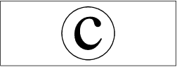
A circle with a "c" in it. Open Source lives or dies on copyright law. Our fond hope is that it lives. Please, let's all do our part to keep it that way. If you have a chance to plug copyrights over patents, please do so. I know many of you are already plugging copyrights over trade secrets. Let's also uphold copyright law by respecting the wishes of copyright holders, whether or not they are spelled out to the satisfaction of everyone's lawyer. The "c" in the circle should stand for civility.
When we think of civility, we think of cities, and of doing things fair and square. So here's the requisite square:
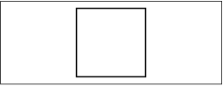
And indeed, cities are built on squares, and rectangles. We call them blocks. And if the city planners leave the buildings off of a block, we call it a square. Even if it isn't square. Go figure.
Sometimes the buildings themselves are square:
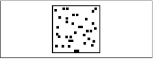
But often they're not. Similarly, if you look through the Unicode book, there are not nearly so many squares as there are circles. I think there's a fundamental underlying reason for that. When we build buildings, and when we write characters, we install them into a rectilinear framework. In terms of writing, we write left-to-right, or right-to-left, or top-to-bottom. The abstract cells into which we install the characters or buildings are squarish. But both buildings and characters tend to disappear visually if they follow the same lines as the overall text. So most characters tend to contain lines at odd angles, just as many modern skyscrapers are designed to avoid looking like boxes. Nobody really likes the skyscrapers of the 1960s, because they're too boxy. People like things to be visually distinct from their surroundings.
That is also why the various classes of operators and variables in Perl are visually distinct from each other. It's just sound human engineering, as far as I'm concerned. I don't like the fact that all the operators look the same in Lisp. I don't like the fact that most the street signs look alike in Europe. And I applaud the decision of Germany to make their stop signs look different from all the other signs. Of course, it's also helpful to us ignorant Americans that they made them look like American stop signs. Chalk up another one for cultural imperialism.
However, in repentance for American cultural imperialism, let me point out another advantage of the ideographic system of writing. Because ideographs are written into square cells, they can just as easily be written horizontally as vertically. Or vice versa. Our variable-width characters do not have that nice property. Especially in a font like Helvetica, where you have trouble telling i's and l's apart even when they're next to each other. Put one above the other and it'd just look like a dotted line. Chalk one up for the Chinese, the Japanese, and the Koreans.
To wrap up, I'd like to talk about triangles. Here's a sample:
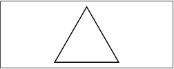
Triangles are related to circles in the same way that arrowheads are related to targets. Here's a target:
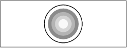
I know I got this one right. I looked it up on the Web. More importantly, I stopped as soon as I found the first one.
Actually, this is the Unicode character named "bulls-eye."
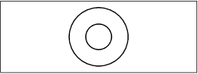
I'm not quite sure what it's supposed to mean. But that's never stopped me before. I'll make it mean something.
I've shot a lot of arrows in this essay, and I don't know whether I've hit any bulls-eyes yet. We put triangles on the front of arrows because they're sharp. Triangles are associated with pain, especially if you step on one. The angles of the triangle tend to suggest the hard work of climbing a mountain:
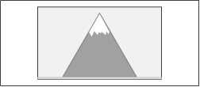
On the other hand, looks can be deceiving. A triangle also represents a flat road stretching to the horizon:
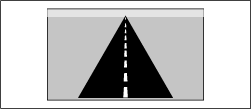
It's all a matter of perspective. You can choose your view by choosing where to stand. I can't predict whether Perl's road ahead will be bumpy or smooth, but I can predict that the more perspectives we can see things from, the easier it will be to choose the perspectives we like. And this is, after all, the job of a language designer, to survey the problem from many perspectives, to be just a little bit omniscient, so that other people can benefit. I do a little triangulation, and I map the territory. That's my job. If my map gets you where you're going, I'm happy.
If you take a section out of the Perl onion, it looks kind of like a triangle. Put in on its side and you have a growth chart for Perl over the last ten years:
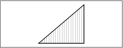
All fine and dandy. This chart is notional, of course. I have no way of measuring Perl's actual growth. But obviously it is still growing. We're doing a lot of things right, and by and large we should keep doing just what we're doing.
Now suppose we shrink this triangle and extend the chart to show the whole lifetime of Perl. We really don't know how long it might last.
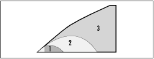
It's hard to say what will make the difference here. But I have to tell you that I don't evaluate the success of Perl in terms of how many people like me. When I integrate these curves, I count the number of people I've helped get their job done.
I can tell you that I think the difference between curve 1 and curve 2 might depend on adding in all the potential Windows users, and all the problems they need to solve. Which are many. It's no accident that we've just put out a Win32 Perl Resource Kit.
And I can tell you that the difference between curve 2 and curve 3 may depend on adding in all the international users that could benefit from Perl. It's no accident that the latest development version of Perl lets you name your variables with any characters that are considered to be alphanumeric in Unicode. That includes ideographs. There are a billion people in China. And I want them to be able to pass notes to each other written in Perl. I want them to be able to write poetry in Perl.
That is my vision of the future. My chosen perspective.
I began by talking about the virtues of a programmer: laziness, impatience, and hubris.
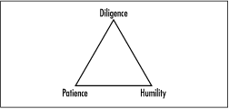
These are virtues of passion. They are also virtues of an individual. They are not, however, virtues of community. The virtues of community sound like their opposites: diligence, patience, and humility.
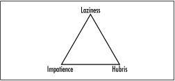
They're not really opposites, because you can do them all at the same time. It's another matter of perspective. These are the virtues that have brought us this far. These are the virtues that will carry our community into the future, if we do not abandon them.
Basically, we just have to stay the course. Friedrich Nietzsche called it a "long obedience in the same direction," which is a good snappy slogan. But I like the full quote too:
The essential thing "in heaven and earth" is . . . that there should be long obedience in the same direction; there thereby results, and has always resulted in the long run, something which has made life worth living.
And now we've come full circle, back to the circle. Here is the front door of Bilbo Baggins' house. There's a road that goes from that door, and Bilbo wrote a poem about it.
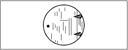
The Road goes ever on and on,
Down from the door where it began.
Now far ahead the Road has gone,
And I must follow, if I can,
Pursuing it with eager feet,
Until it joins some larger way
Where many paths and errands meet.
And whither then? I cannot say.
J.R.R. Tolkien, The Hobbit
© 1999, O'Reilly & Associates, Inc.